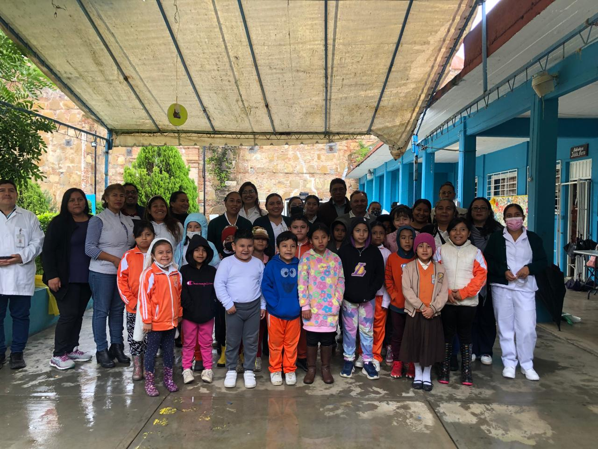
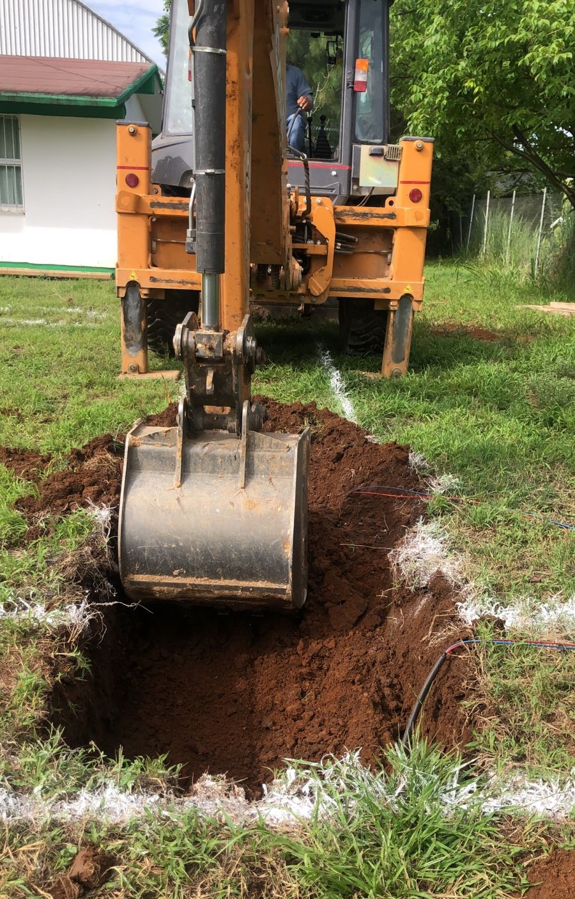
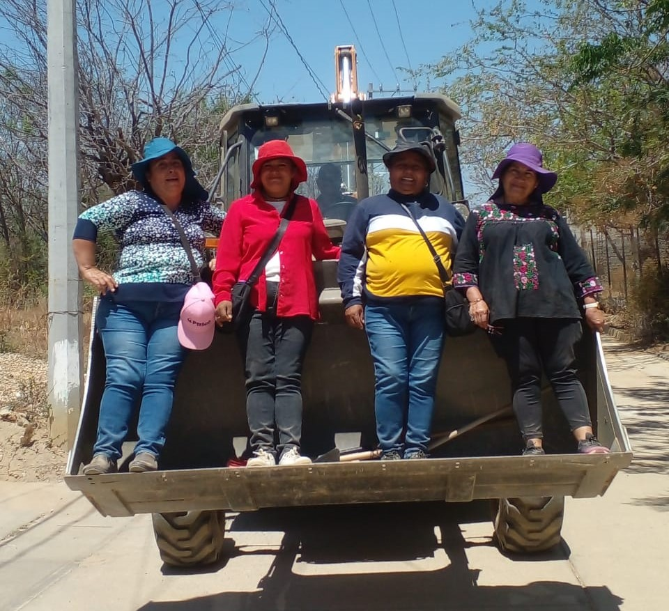

Ser el primer municipio de la región en buscar como objetivo principal abatir totalmente el rezago educativo, garantizar la cobertura total y eficiente provisión de servicios esenciales como agua potable, drenaje sanitario, tratamiento de sus aguas residuales...
Ser un Municipio líder en la región con políticas públicas, objetivos y estrategias eficientes, continuar con la construcción de una comunidad justa y equitativa, donde se promueva la igualdad de oportunidades, se combata la pobreza y la exclusión social...



Presidente Municipal
Síndico Municipal
Regidora de Hacienda y Obras
Regidora de Educación
Regidor de Policía
Director de Panteón
Director de Salud y Ecología
Directora de Deportes
Directora de Festejos
Director de Actos Cívicos
